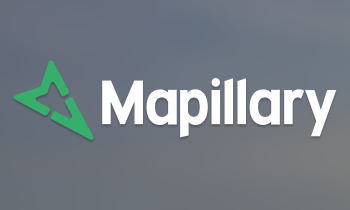
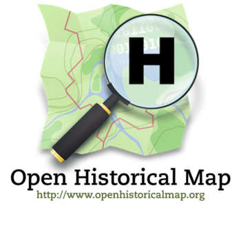

La chiusura del cerchio
L’obiettivo principale del progetto OpenPompei è quello di promuovere la cultura della trasparenza ed abbiamo scelto di farlo attraverso tre linee di intervento:
- apertura di dati amministrativi;
- apertura di dati archeologici;
- apertura alla partecipazione.
Abbiamo scelto di promuovere una maggiore partecipazione attraverso la condivisione di dati aperti, amministrativi o archeologici, che rendano possibile una “apertura virtuale” di Pompei a tutti coloro che ne hanno interesse, scientifico o di altro tipo.
Sull’apertura di dati amministrativi abbiamo iniziato col Portale della Trasparenza, ed abbiamo intenzione di migliorare il lavoro svolto nelle ultime settimane del progetto.
Sull’apertura di dati archeologici, un primo passo è stato quello della messa in rete con licenza CC BY-SA di immagini di Pompei a seguito della promozione del contest Wiki Loves Monuments nello scorso Settembre. A breve libereremo anche i dati che saranno prodotti nel corso dello SCRIPTORIVM. Non possiamo essere sicuri che il lavoro che svolgeremo insieme nel corso della hackathon produrrà, parafrasando Leibniz, “i migliori dei dataset possibili”, ma il nostro risultato migliore sarà – senza dubbio – il rilascio di essi in formati e licenze che ne consentiranno il riuso, di modo che da questa prima disseminazione di dati archeologici aperti abbia inizio una nuova prassi di produzione-condivisione-riuso che ne migliori progressivamente la qualità. Il valore aggiunto di quanto sarà rilasciato nel corso dello SCRIPTORIVM è il suo essere risultato insieme di intelligenza collettiva ed costruzione collaborativa del dato messe a sistema nello sviluppo delle singole tracce. Infatti già diverse comunità e progetti di ricerca stanno convergendo sullo SCRIPTORIVM, per collaborare, ciascuno con la propria specifica competenza ed esperienza.
Pompeiorum Viarum Imagines with the support of Mapillary!
La track II ci ha permesso di entrare in contatto da subito con la comunità di Mapillary, la quale ha raccolto con grande entusiasmo il nostro obiettivo, rilanciando la raccolta alle armi, dando spazio sul suo blog ad un guest post di Andrea Borruso (nonché inviandoci un regalo di buon auspicio: t-shirt ed adesivi per i partecipanti allo Scriptorivm).
Pompeiorum Libera Tabula and Pompei Bibliography and Mapping Project (PMBP)
Il web-GIS del PBMP
Iniziando a lavorare sulla track III siamo venuti a conoscenza di questo progetto della University of Massachusetts Amherst, diretto da Eric Poehler, Assistant Professor of Classics.
Il PBMP aveva già “svolto” parte della track III, così come noi l’avevamo progettata: esso ha infatti già creato una base vettoriale di Pompei a partire dalle mappe del Corpus Topographicum Pompeianum (CTP) ed ha legato agli elementi vettoriali una bibliografia costruita con Zotero, a partire dalle quasi 15.000 citazioni raccolte da Nova Bibliotheca Pompeiana (NBP). Abbiamo così contattato Eric Poehler per chiedergli se il PBMP fosse disponibile a collaborare allo SCRIPTORIVM. Anche in questo caso la risposta è stata entusiasta: il PBPM ha messo a disposizione i suoi dati, come lo stesso Eric Poehler auspicava potesse accadere:
There are a number of offline GIS for Pompeii (…) Tragically, “the wheel” of a Pompeii GIS thus has been invented at least four times, each one representing hundreds of hours of digitization work.
Questo incontro dimostra il potenziale del cosidetto knowledge sharing, dal momento che la collaborazione del team americano eviterà la duplicazione di dati già esistenti, permettendoci di concentrarci sullo sviluppo di un modello dati semplice che ne faciliti l’uso.
Archeologica Academia
La track I punta ora ad arricchire il modello di carto-bibliografia sviluppato da PBMP, dando agli utenti la possibilità di georeferenziare la risorsa bibliografica e indicare la cronologia del soggetto archeologico cui la risorsa fa riferimento.
 Il passo in avanti rispetto ai nostri obiettivi consentito dalla volontà di collaborazione e condivisione del gruppo di ricerca del PBMP ci ha resi ancora più consapevoli dell’importanza di agevolare “magnifiche sorti e progressive”, di modo che i risultati dello SCRIPTORIVM siano in breve tempo punto di partenza per nuovi sviluppi. Abbiamo perciò individuato tre facilitatori che coadiuveranno col team di OpenPompei nello svolgimento delle track e che allo stesso tempo potranno in qualche misura “portare avanti” il lavoro avviato.
Il passo in avanti rispetto ai nostri obiettivi consentito dalla volontà di collaborazione e condivisione del gruppo di ricerca del PBMP ci ha resi ancora più consapevoli dell’importanza di agevolare “magnifiche sorti e progressive”, di modo che i risultati dello SCRIPTORIVM siano in breve tempo punto di partenza per nuovi sviluppi. Abbiamo perciò individuato tre facilitatori che coadiuveranno col team di OpenPompei nello svolgimento delle track e che allo stesso tempo potranno in qualche misura “portare avanti” il lavoro avviato.
Due di essi, Stefano Costa e Augusto Palombini, sono archeologi nonché parte dello “zoccolo duro” della comunità ArcheoFOSS, che potrebbe essere la comunità di riferimento con le competenze adeguate per dare seguito nel tempo all’esperienza dello SCRIPTORIVM. Marco Montanari è uno sviluppatore dei Marconi Labs e ha all’attivo collaborazioni con archeologi per la messa a punto di strumenti che consentano più agevolmente la realizzazione di una cartografia archeologica aperta su Open Historical Maps.
Una ulteriore coincidenza proficua: Maurizio Napolitano, ricercatore presso FBK che tanto ci ha aiutati in vario modo nel corso del progetto OpenPompei, era negli scorsi giorni a New York per partecipare a State of the Map US e ha chiacchierato dello SCRIPTORIVM con il team di Open Historical Maps, che ora sta valutando se sarà possibile inviare una delegazione allo SCRIPTORIVM per presentare ai partecipanti questa piattaforma, con l’obiettivo di migliorarla e farla crescere
E ricordate di iscrivervi allo SCRIPTORIVM su Eventbrite!
Andrea Borruso, Paola Liliana Buttiglione e Gabriele Gattiglia

{kind=link}
{kind=link}
{kind=link}
{kind=link}
{kind=link}